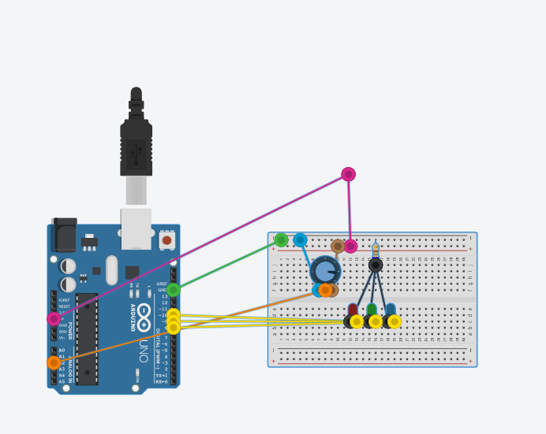
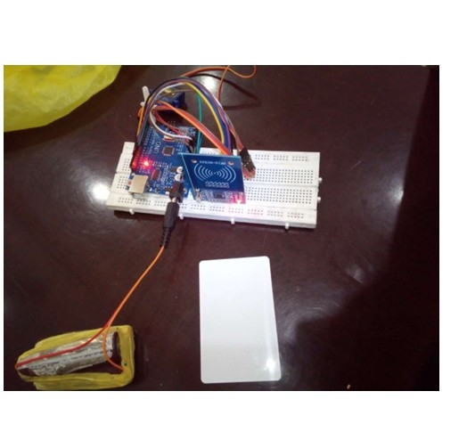
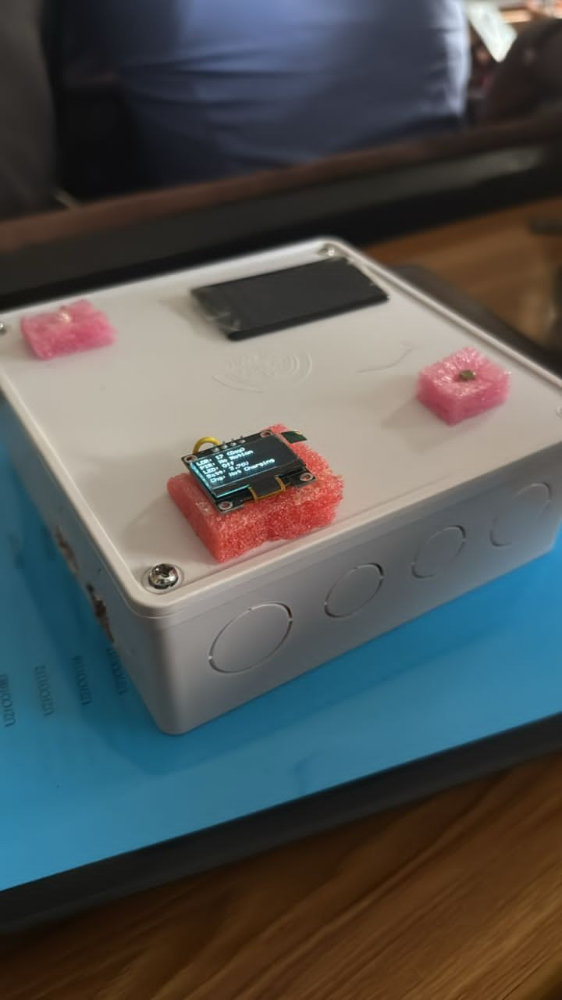
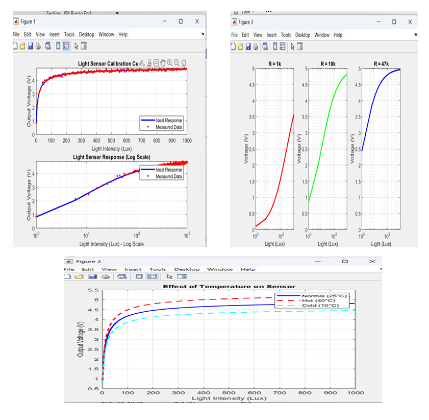

Computer Engineering student with foundational experience in embedded systems, circuit prototyping, and technical simulation through academic and group projects. Seeking a 6-month SIWES placement to develop practical IoT and hardware skills.
01. Arduino Simulation — 3-LED Level Indicator

Problem
How can a continuous analog input be translated into discrete output levels?
Approach
- Used potentiometer as analog input
- Read values using Arduino
- Defined thresholds for LED control
Implementation
- Mapped 0–1023 into 3 ranges
- Each range activates a different LED
- Simulated system using TinkerCAD
Result
System consistently displays three distinct output levels based on analog input variation.
Learning
Improved understanding of how analog inputs are processed into discrete outputs in embedded systems.
02. Smart Door Lock — RFID System

Problem
How can access be restricted to authorized users?
Approach
- RFID cards used as identifiers
- Microcontroller verifies card data
Implementation
- RFID module reads UID
- Arduino checks authorized IDs
- Triggers access response
Result
System reliably differentiates between authorized and unauthorized users.
Learning
Gained exposure to embedded authentication systems and hardware integration.
03. Smart Light System

Problem
How can a system respond automatically to environmental light conditions?
Approach
- Used LDR sensor input
- Processed data using microcontroller
- Displayed output via OLED
Implementation
- Sensor reads environment
- Arduino controls lighting output
- Display shows system status
Result
System responds in real-time to environmental changes and updates output accordingly.
Learning
Developed understanding of complete system integration from sensing to output.
04. LDR Sensor Analysis — MATLAB

Problem
How does an LDR behave under varying conditions?
Approach
- Simulated sensor behavior in MATLAB
- Analyzed light vs voltage relationships
Implementation
- Modeled different resistance values
- Simulated temperature effects
- Generated response curves
Result
Identified how circuit parameters influence sensor output behavior.
Learning
Strengthened understanding of sensor modeling and system analysis.